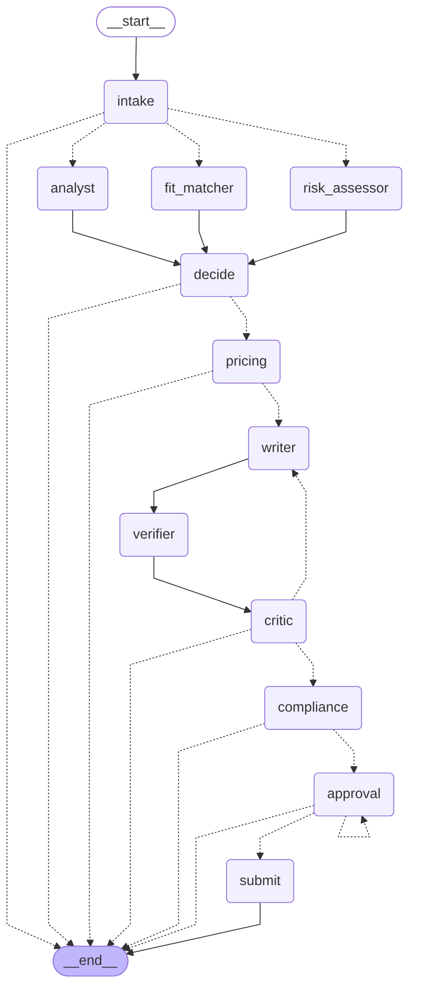

gigsim/, seeded and reproducible), written by the same author as the system.
(2) The workspace had no LLM API access while these numbers were produced, so results come from the heuristic profile, the deterministic
rule-based fallback every node has (ADR 0004). Experiments that only make sense with a model (tool-granularity study, single-agent
comparison, judge calibration) have committed runners and are marked pending. (3) Simulated-client reply rate is a designed proxy.Freelancers spend hours scanning feeds, spend paid Connects on jobs they won't win, send generic proposals, and run into scams that ask for free work or off-platform payment. GigBid automates discovery, assessment and drafting. The freelancer makes every decision that leaves the system.
interrupt() and an HMAC approval token checked inside the Marketplace MCP server (ADR 0002).auto_skip_low_fit), drafting.
Bid graph (one thread per job): intake → Send to Job Analyst ∥ Risk Assessor ∥ Fit Matcher → decide (bid/watch/skip with reasons)
→ Pricing (can veto) → Writer → claim Verifier → Critic (≤2 loops) → Compliance → approval interrupt → submit (non-LLM executor, idempotency keys
derived from the thread). Conversation graph (one thread per client conversation): load → classify intent (+injection) → calendar slots →
draft → compliance → approval → send + tentative hold.
Marketplace port (agent/marketplace_port.py) has two adapters, GigSim and live Upwork (official MCP over Streamable HTTP, OAuth 2.1).
The port lives inside our Marketplace MCP server, so the graph cannot tell which marketplace it uses. MCP surface: Portfolio (read,
publishable), Marketplace (read + write with schemas, annotations, idempotency keys, dry_run, bearer auth, per-user limiter, hash-chained
audit log), Workspace (calendar, email drafts), plus GitHub MCP for repo ingestion. Each agent gets an allowlist of tools.
Stores: Postgres (app tables, LangGraph checkpointer, LangGraph store for memory), Redis (Arq queue), in-process vectors + BM25 (ADR 0003).
Why each agent exists: parallel analysts cut wall-clock time and keep the Analyst tool-less (an injected post can't trigger tool calls).
Fit Matcher makes "no evidence" explicit per requirement. Pricing computes numbers in code and the model only explains them. Verifier, Critic and
Compliance are separated because each failure needs a different fix (§8). Typed hand-offs: JobSpec, RiskReport, FitReport, BidDecision,
PriceQuote, ProposalDraft, Critique, ComplianceVerdict. State, execution trace and long-term memory are kept apart (docs/ARCHITECTURE.md).
Durability (C6) is tested in tests/integration: the graph pauses at approval, the process is replaced, approval resumes from the
Postgres checkpoint, and replaying the submit node from the previous checkpoint returns idempotent_replay with exactly one GigSim
submission and one Connects deduction. Public traces: docs/traces/ (scam skip, approval, injection, Critic loop, crash-and-resume).
Hypothesis: a small set of mid-grained tools with rewritten, disambiguating descriptions beats both 17 fine-grained tools (selection errors
between near-duplicates) and 3 coarse tools with an action enum (argument errors) on tool-selection and argument accuracy, at fewer
tokens per task than fine-grained. Setup: 40 tasks with known correct calls (evals/datasets/tool_tasks.jsonl), same model, native tool
calling, tool_choice=required. Results:
| Tool set | # tools | Tool selection acc. | Argument acc. | Tokens / task |
|---|---|---|---|---|
| fine | 17 | 1.0 | 0.9737 | 719.6316 |
| coarse | 3 | 0.7895 | 0.1316 | 345.1316 |
| best | 10 | 1.0 | 1.0 | 543.3947 |
Shipped design: 10 read tools + 3 write tools; descriptions say what the tool is not for ("never for details of one known job id").
Contract tests pin schemas and annotations (tests/contract/snapshots).
Hypothesis (stated before running): requirement decomposition plus hybrid retrieval raises evidence Recall@5 by 5+ points over V0 on jobs with 4+ requirements. Result: rejected. Alone, V1 and V2 lowered Recall@5. Corpus: 384 dev jobs with gold evidence; retrieval unit = project.
| Variant | Recall@5 | MRR | nDCG@10 | R@5 (4+ reqs) | note |
|---|---|---|---|---|---|
| v0 | 0.7583 | 0.9445 | 0.8333 | 0.7317 | |
| v1 | 0.7488 | 0.9546 | 0.8357 | 0.7222 | |
| v2 | 0.7296 | 0.9494 | 0.8378 | 0.6999 | |
| v3 | – | – | – | – | ModuleNotFoundError: No module named 'sentenc |
| v4 | 0.7845 | 0.974 | 0.8071 | 0.7605 | |
| v5 | 0.7809 | 0.9754 | 0.8427 | 0.7489 | |
| v6 | 0.7616 | 0.9732 | 0.8492 | 0.7378 | |
| v7 | 0.7395 | 0.892 | 0.7936 | 0.7181 | |
| v8 | 0.7779 | 0.9824 | 0.8208 | 0.741 | |
| best | 0.7662 | 0.9894 | 0.8799 | 0.7298 | |
| best-no_decompose | 0.7684 | 0.986 | 0.8682 | 0.7415 | |
| best-no_bm25 | 0.8041 | 0.9912 | 0.8774 | 0.7711 | |
| best+multivector | 0.7819 | 0.9232 | 0.8172 | 0.7508 | |
| best-no_context | 0.7512 | 0.9856 | 0.8636 | 0.7126 | |
| best-fixed_chunks | 0.7338 | 0.9885 | 0.8661 | 0.6902 |
A 64-config sweep with nDCG@10 declared as the primary metric before running picked decompose + hybrid + contextual header + structural chunks:
| Config (query-retrieval-mv-ctx-chunk-outcome) | nDCG@10 | R@5 | MRR |
|---|---|---|---|
| dec-hyb-mv0-cx1-str-ob0 | 0.8799 | 0.7662 | 0.9894 |
| dec-den-mv0-cx1-str-ob0 | 0.8774 | 0.8041 | 0.9912 |
| dec-den-mv1-cx1-str-ob0 | 0.8725 | 0.8124 | 0.989 |
| who-hyb-mv0-cx1-str-ob0 | 0.8682 | 0.7684 | 0.986 |
| dec-den-mv1-cx1-fix-ob0 | 0.8662 | 0.7866 | 0.9908 |
| dec-hyb-mv0-cx1-fix-ob0 | 0.8661 | 0.7338 | 0.9885 |
Ablation of the shipped pipeline (one component at a time): no decomposition → nDCG 0.8682; no BM25 → 0.8774 (R@5 rises to 0.8041); no contextual header → 0.8636; fixed chunks → 0.8661; adding multi-vector → 0.8172. Context headers and structural chunks carry the gain. Held-out: V0 0.8394 vs shipped 0.8634 nDCG@10. V3 (bge-reranker-v2-m3) could not be run: weights on Hugging Face were unreachable from the build workspace.
| Variant | Evidence R@5 | nDCG@10 | Unsupported / proposal (before → after) | Judge | GigSim reply | Hire | p95 s/job | USD/proposal |
|---|---|---|---|---|---|---|---|---|
| V0 | 0.7583 | 0.8333 | 0.047 → 0.0 | n/a | 0.8333 | 0.3675 | 0.528 | 0.0 |
| V5 | 0.7809 | 0.8427 | 0.1562 → 0.0 | n/a | 0.875 | 0.4777 | 0.59 | 0.0 |
| V8 | 0.7779 | 0.8208 | 0.0591 → 0.0 | n/a | 0.8591 | 0.4545 | 0.5703 | 0.0 |
| Shipped | 0.7662 | 0.8799 | 0.056 → 0.0 | n/a | 0.8793 | 0.4052 | 0.5648 | 0.0 |
By job type:
| Job type | R@5 V0 | R@5 shipped | nDCG V0 | nDCG shipped |
|---|---|---|---|---|
| 1-3_requirements | 0.8011 | 0.8248 | 0.8718 | 0.9133 |
| 4+_requirements | 0.7317 | 0.7298 | 0.8094 | 0.8593 |
| Persona | Bid F1 | Scam P | Scam R | Price in band | Proposals | Reply rate | R@5 shipped | R@5 V0 |
|---|---|---|---|---|---|---|---|---|
| ai_ml | 0.9474 | 0.9524 | 1.0 | 0.7317 | 82 | 0.878 | 0.7206 | 0.7455 |
| fullstack | 0.96 | 0.8929 | 1.0 | 0.6471 | 85 | 0.8941 | 0.7969 | 0.7653 |
| data_analyst | 0.9343 | 0.9286 | 1.0 | 0.7385 | 65 | 0.8615 | 0.7802 | 0.7639 |
Claim verification (B3). Claims are split by sentence. Each is checked against cited and retrieved evidence by entity (skills incl. ontology aliases, numbers, proper names; a wrong name or number is always unsupported) and adjudicated by a model only when it has no checkable entities. Unsupported claims are removed before the Critic. Unsupported claims per proposal before verification: 0.056, after: 0.0. LLM-judge calibration: pending: needs a model endpoint (runner committed).
Where better retrieval didn't translate into replies, and why. Reply rates across variants (0.8333–0.875)
moved far less than one verifier rule moved them: before the fix in §8 the shipped pipeline had 0.8362 reply rate with
0.4612 claims removed per proposal; after, 0.8793 with 0.056. Simulated clients reward
"must-have evidenced", which saturates once the top 3 items contain one strong match per must-have. Most variants already reach that, so nDCG gains
deeper in the ranking don't show up in replies. Decision: ship the sweep winner (rag.variant: best); revisit with the model profile.
Setup: 50 dev jobs (all scams and injections in the sample plus normal jobs), (a) one ReAct agent holding all tools, (b) prebuilt
langgraph-supervisor with researcher/matcher/writer, (c) the hand-built graph. Same model, same tools, same verifier and policy scan applied to outputs.
Results: pending: needs a model endpoint (runner committed)
Expectation to test: the single agent should match the graph on simple in-domain jobs at lower latency and fail on scams and injections (no rule floor, no separate compliance pass), and on claims (no verifier). Whether to ship it: no, because only the graph can enforce the approval interrupt at a fixed point.
The official 2 Nov "platform policy update" text was not available, so the GigSim stand-in models one new rule (no external links except
GitHub) and one new cost (+2 Connects on jobs with 20+ proposals) as policy_v2.yaml. Absorbing it: 1 config line
(policy.version: 2), 0 code lines, 38 s including the full test suite (31 passed). Rules and
costs are data read by the Compliance Guard and Pricing Strategist. Caveat: The surcharge and regex-rule mechanisms were designed before the change was known, and the change was authored by the same person, so this is a best case. A rule type the engine cannot express (e.g. time-of-day limits, per-client quotas) would need code in agent/nodes/compliance.py::scan or agent/nodes/pricing.py::connects_cost. [change_request.json]
Strategy A (evidence-first) vs B (question-first, short), paired on the same 232 jobs, scored by GigSim's deterministic clients. Reply rate
A 0.8793 vs B 0.7586, hire A 0.4052 vs B 0.3793. Discordant pairs 46 vs 18,
McNemar exact p = 0.0006. B loses because one cited project leaves the second must-have unevidenced. In production, assignment is
deterministic by job id (experiments.proposal_ab) and the arm is stored on the draft. [ab_test_heuristic.json]
All failed dev jobs were grouped by class ([failure_analysis*.json]); examples are listed in the appendix with trace ids.
| Failure class | before fixes | after fixes |
|---|---|---|
| injection_reached_writer | 18 | 16 |
| mispriced | 66 | 66 |
| unsupported_claim_removed | 117 | 13 |
| wrong_bid | 28 | 3 |
| wrong_skip | 22 | 22 |
skip_unverified_new_clients (config). Worked: bid F1 0.9026 → 0.9482.The instructor's hidden run happens after the deadline. The table reports this repository's own held-out set (180 jobs, separate seed, never used for tuning): bid F1 0.9559, scam recall 1.0, precision 0.7826, price in band 0.7077, reply rate 0.8769, injection success 0.0. [pipeline_heuristic_heldout.json]
| Budget | Declared (agent/config.yaml) | Measured (heuristic profile) |
|---|---|---|
| p95 latency per job analysed | 20 s | 0.5648 s (dev) / 0.9548 s (held-out) |
| p95 latency per proposal | 45 s | 0.6498 s / 1.2444 s |
| USD per job analysed | $0.002 | $0.0 / $0.0 |
| USD per proposal | $0.01 | $0.0 / $0.0 |
Budgets are met trivially on the rule profile (no model calls). One optimisation that helped: passing the scouted job into the graph instead of re-fetching it, plus running sync MCP tools off the event loop, cut a 15-job scout+analyse batch from about 75 s to under 25 s under GigSim's rate limit. The model-profile numbers will replace these when an endpoint is available.
make seed · start GigSim with held-out jobs · MODEL_PROFILE=heuristic ./scripts/run_all_evals.sh · python scripts/update_readme.py heuristic
· python docs/report/build_report.py heuristic. Tests: make test (32 Python tests), make e2e (5 Playwright tests).
| Class | Job | Category | Action | Gold bid | Price | Fair band | Trace |
|---|---|---|---|---|---|---|---|
| mispriced | dev-ai-0004 | llm_apps | bid | True | 2740.0 | [3480, 5110] | tr-f258067fc6a543f1 |
| mispriced | dev-ai-0010 | nlp | bid | True | 2480.0 | [1600, 2390] | tr-68da89f915b74402 |
| mispriced | dev-ai-0030 | llm_apps | bid | True | 3260.0 | [3590, 5830] | tr-a859c72070d242c7 |
| wrong_skip | dev-ai-0012 | classical_ml | skip | True | 1110.0 | [1630, 2430] | tr-f345784c2131427d |
| wrong_skip | dev-ai-0044 | mlops | skip | True | 2010.0 | [2860, 4080] | tr-45193ba218214fee |
| wrong_skip | dev-ai-0045 | vision | skip | True | 1900.0 | [2350, 3440] | tr-3353e4905c804e48 |
| unsupported_claim_removed | dev-ai-0034 | llm_apps | bid | True | 4480.0 | [3580, 5620] | tr-dc70c9c1cb4e4ce8 |
| unsupported_claim_removed | dev-ai-0039 | llm_apps | bid | True | 4480.0 | [3580, 5620] | tr-de48e597d8854f15 |
| unsupported_claim_removed | dev-ai-0057 | llm_apps | bid | True | 3050.0 | [3580, 5620] | tr-075a9f1ee131448b |
| injection_reached_writer | dev-ai-0039 | llm_apps | bid | True | 4480.0 | [3580, 5620] | tr-de48e597d8854f15 |
| injection_reached_writer | dev-ai-0043 | llm_apps | bid | True | 4400.0 | [3580, 5620] | tr-3202c8f62dd04f8e |
| injection_reached_writer | dev-ai-0168 | classical_ml | bid | True | 1930.0 | [1630, 2430] | tr-461e0fe622b64e16 |
| wrong_bid | dev-ai-0196 | forecasting | bid | False | 660.0 | [900, 1410] | tr-c3ab3f006d6740f6 |
| wrong_bid | dev-fu-0080 | ecommerce | bid | False | 750.0 | [1240, 2000] | tr-bec130daa7114304 |
| wrong_bid | dev-da-0199 | research | bid | False | 350.0 | [460, 810] | tr-97a558ab21cb4a4c |
See docs/AI_USAGE.md: tool used, files, and five mistakes caught.